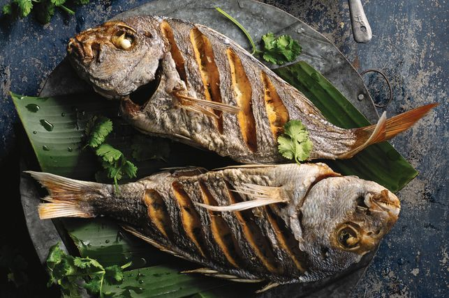

HOW TO MAKE A FISH
This is best accompanied with greens and ugali
- Fried Fish
- Cooking Oil
- Tomatoes
- Salt
- lemon juice
- Heat the oil in a pan
- Add the onions and cook till golden in color
- Add tomatoes
- Add salt and some pepper to season
- Add the lemon juice and stir for 2 seconds
- Put the fried fish and lit it simmer for 3 minutes